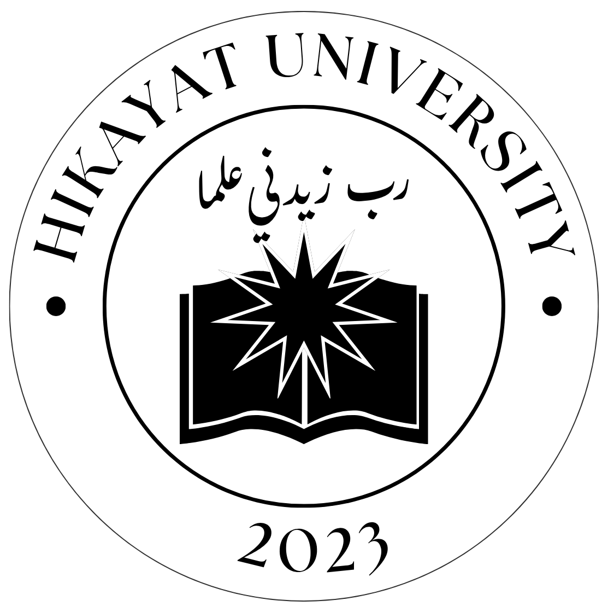

Memuat jurnal
Jurnal ini mungkin sudah dipindahkan atau tidak tersedia. ← Kembali ke arsip
Abstrak
Kata Kunci
Dokumen
Dokumen full text belum tersedia untuk jurnal ini.
Temukan lebih banyak karya penelitian.